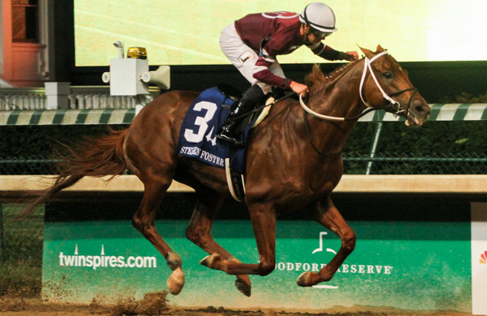

3 Year Old Male Champion
By Turf Writer
Gun Runner made his return to racing a winning one with a powerful front running victory in the $500,000 Stephen Foster Handicap (G1). Last seen in March, finishing second to the reigning Three-Year-old Champion Arrogate in the lucrative Dubai World Cup, Gun Runner also becomes the first domestic horse to secure a ‘Win and You’re In’ spot in the 2017 Breeders’ Cup Classic.
On a very hot evening at Churchill Downs, the field of eight horses looked warm and a bit sweaty heading to the starting gate. As the only grade one winner in the Stephen Foster field, Gun Runner was assigned the high weight of 124 pounds. That was five pounds more than Bird Song and seven to nine pounds more than the rest of this eight horse field, where all but one of the runners were graded stakes winners.
Sent off as the 1-2 favorite, Gun Runner had not run in 83 days and the past performances said that he would face a challenge on the front end from the likes of Bird Song to his inside and Stanford on the outside. Since Hall of Fame trainer Steve Asmusssen has let Gun Runner race on the lead he has been very hard to beat, except for Arrogate.
On this night, Gun Runner was just too good for the rest of these older dirt males and he made it clear that he is the second best handicap horse in the country. Out of the gate regular rider Florent Geroux sent Gun Runner to the front and they were able to immediately open a one length lead over Stanford and Breaking Lucky. Bird Song who broke from the one post position would never be in contention.
Without any significant pressure up front, Gun Runner was able to relax and cruise around the track while setting steady impressive fractions of 23.59, 47.23, 1:10.69, and the mile went in a very quick 1:34.86. Stanford tried to make a move to the outside of the leader, but could not muster a serious threat and as the field straightened out for home Geroux and Gun Runner easily opened up the lead and cruised to a final victory margin of seven lengths in 1:47.46 for the mile and an eighth.
After the race, a very happy Asmussen said, “He’s pretty fast. He has run some amazing races, probably his last four races. His works coming back from Dubai have been brilliant. You know we are glad to see him back in the winner’s circle. In the Dubai World Cup, he ran his heart out and didn’t get to win. I’m very pleased to see all of the admiration that he gets and him winning this race.”
The son of Candy Ride has now won three of his last four starts and four of six starts at Churchill Downs. Overall his record stands at 15: 8-3-2 with earnings of $4,638,500.
At the windows, Gun Runner paid $3.00, 2.40, and 2.10. He also attracted a lot of attention in the show pool with $228,000 of the $310,000 pool bet on him. The $2 exacta with second choice Honorable Duty returned $10.60 and the $2 trifecta down to Breaking Lucky was $52.40.
“We do plan on taking him to Saratoga from here,” added Asmussen. “This was a big step, being his first race back from Dubai, getting him back in the winner’s circle in a ‘Win and You’re In’ race. The Breeders’ Cup is the year-end goal. We’ll just figure out how to get there in the best shape possible.”
Meet Sarah Powers
Sarah Powers has been on the At The Wire staff since 2011 and currently serves as Assistant Editor. Sarah covers Aqueduct, Belmont Park, Monmouth Park, and Saratoga in her two ATW blogs Racing at the Jersey Shore and New York State of Racing. Sarah’s articles and tweets frequently appear in the America’s Best Racing weekly Notebook. In 2012 she became a voter in the NTRA weekly polls for the Top Thoroughbred and Top Three-Year-Old.